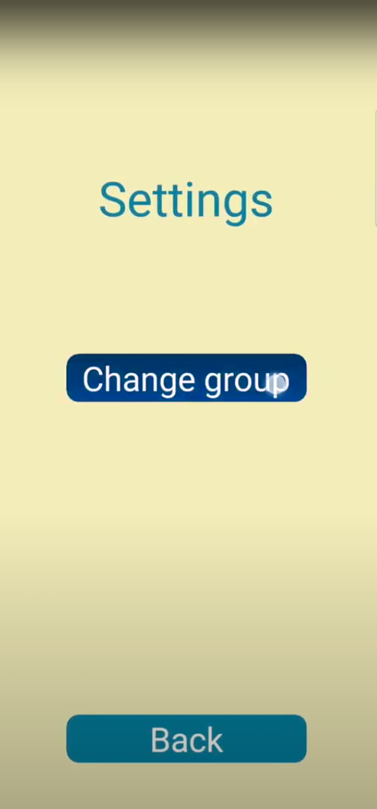
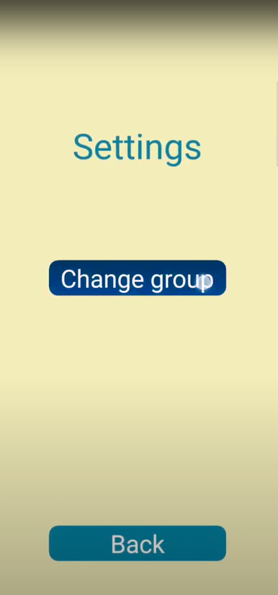

Project details
While volunteering at my church, I had the opportunity to collaborate with the Confirmation program director on the development of a mobile application.
This app serves as a companion guide for children participating in the 30-day Marian Consecration program.
The app's core functionalities include user age group tracking, daily progress monitoring, and seamless integration with the church's pre-recorded YouTube videos.
Design Challenges & Solutions
A key challenge in designing this app was catering to a diverse user base – young children and pre-teens.
To address this, I opted for a visually engaging approach that utilizes light pastel color palettes and incorporates imagery centered around the Virgin Mary.
This balances the appeal of a colorful design with the app's religious context.
Metrics & Future Considerations
Currently, the app is deployed through Firebase, allowing for basic user tracking and metric testing.
Due to its limited availability within the church community, user data is minimal at this stage.
However, I anticipate a significant increase in user acquisition once the app is published on the App Store and Google Play.
This broader reach will provide valuable user engagement data that can be utilized to optimize the app's features and functionality in future iterations.


 
